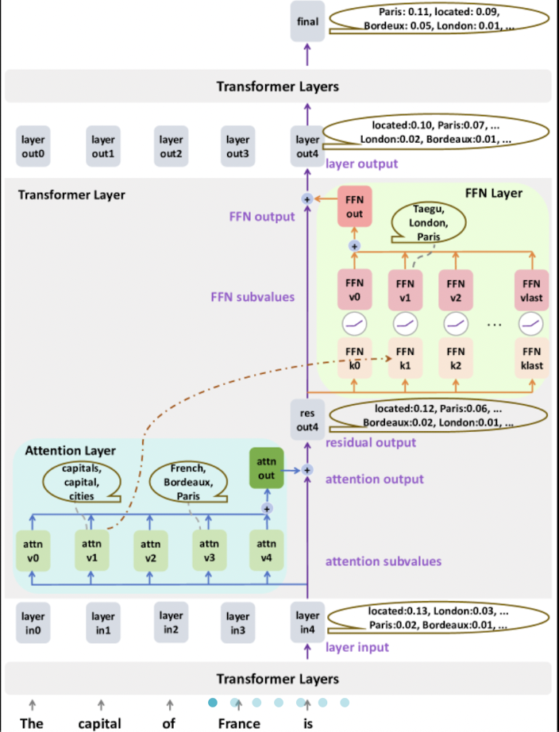

residual streams in transformer models
what residual streams are, why they matter for interpretability, and how attention & FFN outputs accumulate into a shared communication channel across layers — worked through with a concrete "capital of France" example.
read.jpeg)